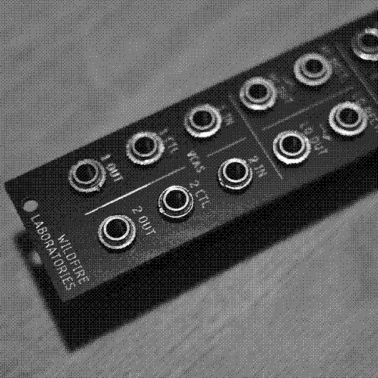

WL-8592 - "WEIRD VECTOR"*
REFERENCE DOCUMENTATION AND MATERIALS GUIDE

SUMMARY
Weird Vector is an exploration into how many awful sounds we could wring out of an entirely passive circuit. Semiconductors (specifically transistors) are generally powered by a constant voltage source. However, interesting effects and utilities can be derived when used passively. Utility modules are generally seen as boring - we do not want to be boring.
Included in this multifunction utility module are two "dirty" wavefolding VCAs, one PNP transistor XOR gate, one diode OR gate, and a dual rectifier using an infrared LED (similar to the Lotek's) as opposed to a conventional diode.
SPECIFICATIONS
- 6HP wide
- Skiff-friendly
- Completely passive
- Completely imperfect
FUNCTIONS
-
DIODE OR
A classic diode OR logic gate, made from standard silicon diodes - when there is ANY signal (be it a gate, trigger, or audio) on either OR 1 / OR 2, it'll be passed to OR OUT.
-
PNP TRANSISTOR XOR
BJT transistor XOR gate - signal from XOR 1 / XOR 2 will be passed to XOR OUT if there is signal on ONLY ONE of the inputs.
-
DUAL INFRARED RECTIFIER
Two infrared LEDs acting as rectifiers - HI RECT will "chop off" the top half of a signal (think the top half of a sine wave), and LO RECT will cut off the bottom half. Each channel has it's own OUTPUT.
NOTE!: The characteristics of the IR LED will result in a smaller / quieter signal, but more distortion / rectification - it is VERY imperfect, that's the point.
-
NPN Transistor "VCAs"
Very large airquotes on VCA there - the bottom portion of the module contains two VCAs utilizing NPN bipolar junction transistors.
I/O is similar to your standard VCA: IN is the input signal, CV is the control signal that dictates volume, OUT is the output. The similarities end there - the CV ctl is inverted, so higher CVs = quieter signal. In addition, the passive nature of the circuit means these are as much waveshapers as they are VCAs. As stated above, these are intentionally VERY imperfect. Do not rely on them for your 7hr Ibiza acid techno opening-for-Orbital set. But please invite me to it.
TIPS / TRICKS
-
The rectifier is good for both cutting CV signals and for distorting audio. The IR LEDs are the same ones we use in our "Lotek" distortion effect and instrument, so you can trust their pedigree.
-
Try chaining VCAs together for interesting tremolo variations and the sort. This will also double the disgusting waveshaping.
-
Our personal favorite trick - the diode OR gate can also act as an imperfect (big shocker there) 2 -> 1 mixer. It will be far from evenly balanced volume wise, and there will be a bit of distortion as the signal passes the diode's forward voltage.
-
As a general rule, ALL functions can be used (or should at least be tried) with both CV and audio.
CONTACT + SUPPORT
Please do not hesitate to reach out to us with questions, comments, repair requests, returns, parables, assembly opcodes, and general support. You can reach us via:
EMAIL – wildfirelaboratories@gmail.com
INSTAGRAM – instagram.com/wildfire_laboratories
WEBSITE – wildfirelaboratories.com
WARRANTY INFO
All Wildfire Laboratories devices have a 5-month warranty from time of
purchase. This covers manufacturing + assembly issues. Incorrect power
connections (power supplies with wrong polarity, too much power, etc), wear
and tear from normal use, and issues due to modifications are not covered by
said Warranty (although you should absolutely email us with any mods you
do).
We will repair, replace, or refund depending on the circumstances. Shipping will be paid by the buyer. Thank you very much for your support, and as always, Wildfire wishes you an easy listening.